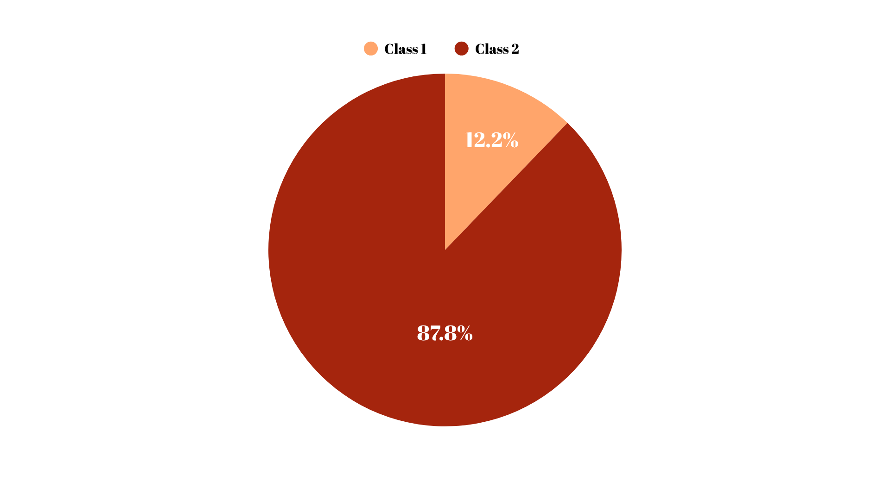
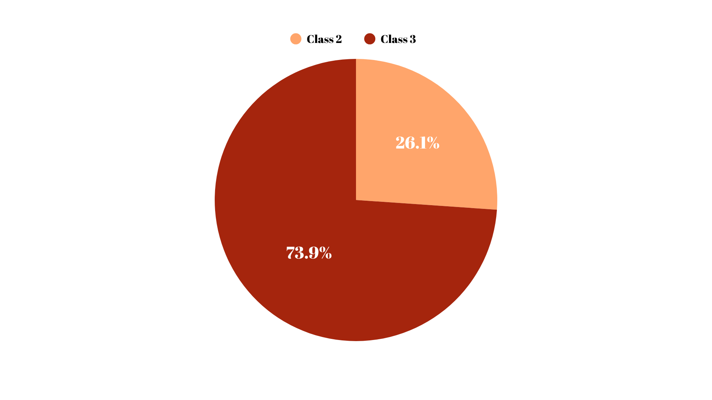
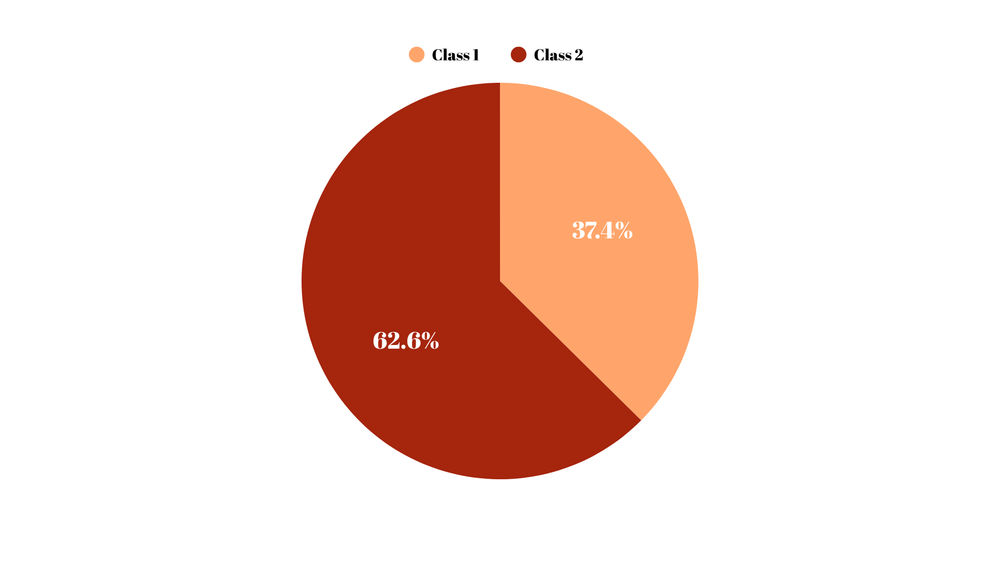

Air Pollution Monitoring in Austria
RESULTS
Key results derived from the spatial and statistical analysis of air quality and population exposure are presented. The focus is on identifying regions in Austria where high pollution levels intersect with dense population zones. Bivariate maps and pie charts offer a clear understanding of spatial disparities and critical exposure zones for three major pollutants: NO₂, PM₂.₅, and PM₁₀.
Bivariate Map Legend
{kind=link}
- The bivariate maps displayed below use a 5×5 color matrix to simultaneously represent pollutant concentration and population count.
- The vertical axis represents air pollutant concentration (from low to high).
- The horizontal axis represents population count (from low to high).
- The darkest shades in the top-right indicate regions where both air pollution and population density are high — signaling critical areas of exposure.
Bivariate Maps
{kind=link}
NO₂ Concentration vs Population
This map visualizes the spatial overlap of nitrogen dioxide (NO₂) concentrations and population density. Darker purple tones indicate regions with both high NO₂ and high population. In particular, northeastern Austria emerges as a hotspot of exposure risk, highlighting a need for stricter emission control in densely inhabited areas.
{kind=link}
PM₂.₅ Concentration vs Population
PM₂.₅ is among the most harmful pollutants due to its ability to penetrate deep into the lungs. This bivariate map reveals that many regions in northern and eastern Austria are simultaneously experiencing high PM₂.₅ values and high population levels. These areas are thus considered highly vulnerable.
{kind=link}
PM₁₀ Concentration vs Population
The spatial distribution of PM₁₀ concentration in relation to population density is illustrated here. While western Austria shows higher PM₁₀ levels, many of these zones are less populated. The central and northeastern districts, however, combine moderate-to-high pollution with dense population, indicating significant public health concerns.
Population Exposure to Air Pollution – Pie Charts
Pie charts summarize the distribution of Austria’s population exposed to different levels of air pollution. The data is based on the maximum pollutant class and total population per class fields obtained through zonal statistics. The charts represent three pollutants: NO₂, PM₂.₅, and PM₁₀, each with exposure categories ranging from low to high.
The pollution classes are:
- Class 1:Low pollution exposure.
- Class 2:Moderate pollution exposure.
- Class 3:High pollution exposure.
Some charts display only two classes because not all three exposure categories were observed in the dataset for every pollutant.
NO₂ Exposure
{kind=link}
This chart shows that 87.8% of the population lives in areas categorized under Class 2 (moderate exposure), while 12.2% in Class 1 (low exposure) regions. No areas fell into Class 3 (high exposure) based on 2020 data.
PM₂.₅ Exposure
{kind=link}
The PM₂.₅ exposure chart indicates a more significant risk: 73.9% of the population is exposed to Class 3 (high exposure), and 26.1% to Class 2 (moderate exposure). This highlights PM₂.₅ as a major public health concern in Austria.
PM₁₀ Exposure
{kind=link}
For PM₁₀, 62.6% of the population lives in Class 2 (moderate exposure) areas, and 37.4% in Class 1 (low exposure) areas. Again, Class 3 is absent, suggesting PM₁₀ concentrations did not reach extreme levels in any district.
Conclusions
Overall, the combination of bivariate maps and population-based pie charts reveals critical zones of environmental injustice in Austria, where pollution exposure aligns with population vulnerability. These findings provide essential guidance for targeted environmental interventions and support the development of effective, spatially informed air quality management strategies.